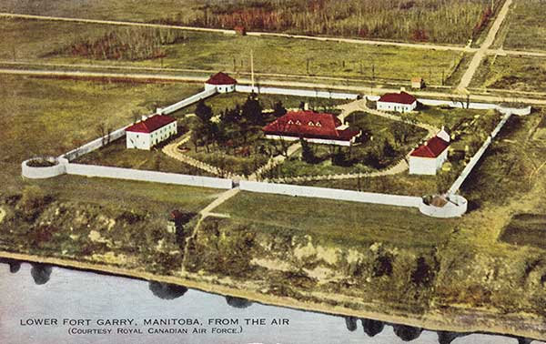

Treaty 1
A treaty is an agreement between the Canadian government, indigenous communities, provinces, and territories.
Treaties outline each group's continued treaty rights and benefits and set forth the parties' ongoing rights and obligations.
In other words, a treaty is an understanding between nations.

Lower Fort Garry, Where Treaty 1 Would Have Been Signed.
Background Information
Treaty No. 1 was signed August 3rd, 1871, by representatives of the Crown and indigenous communities. It was negotiated and arranged at Lower Fort Garry(Stone Fort Treaty). More specifically, Treaty 1 was made between the First Nations and the Crown.

Detailed Canadian Map That Illustrates the Treaties of Canada. Treaty 1 Can Be Found in the South of Manitoba.
Relationship Between Treaty 1 and Other Treaties
A total of 11 numbered treaties were negotiated. The treaties together make up an integral part of Canada's historical and contemporary landscape. The general form and scope of agreements of the treaties are similar, however the circumstances of each treaty signing is unique. The treaties (negotiated between 1899 and 1921) are all relatively similar but treaty 1 holds fewer clauses.